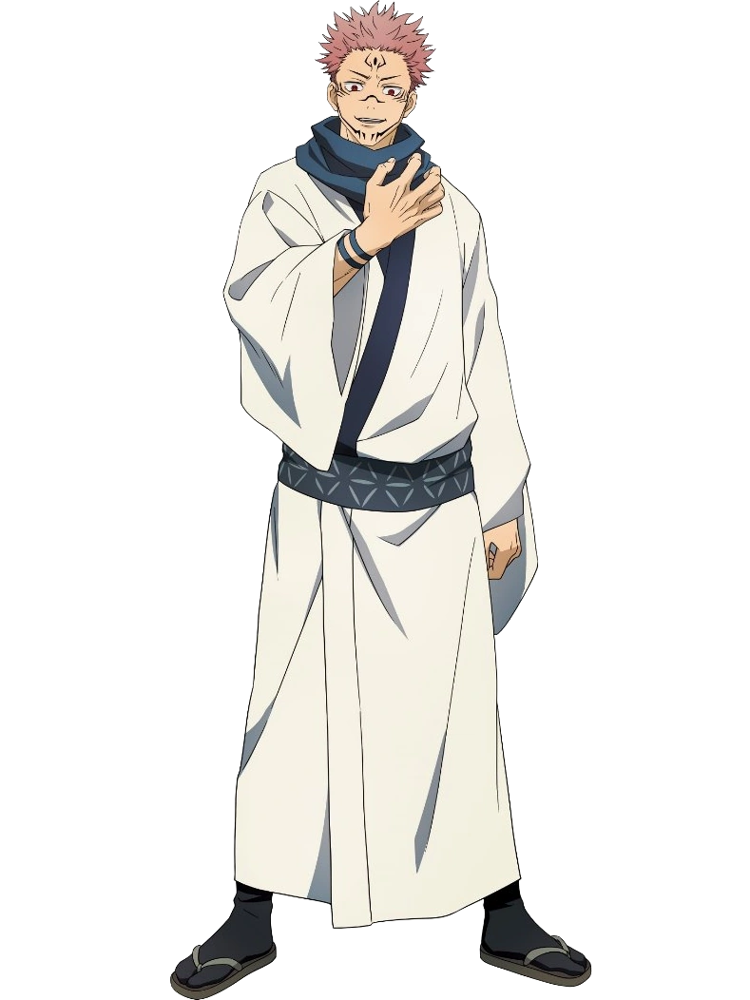

Yuji Itadori is an unnaturally fit high school student living in Sendai. On his deathbed, his grandfather instills two powerful messages within Yuji: "always help others" and "die surrounded by people." Yuji's friends at the Occult Club attract Curses to their school when they unsealed a rotten finger talisman which Yuji swallowed to protect Megumi Fushiguro and their friends, becoming host to a powerful Curse named Ryomen Sukuna. Due to Sukuna's evil nature, all sorcerers are required to exorcise him (and by extension, Yuji) immediately. But upon seeing Yuji retaining control over his body, Megumi's teacher Satoru Gojo brings him to the Tokyo Prefectural Jujutsu High School.
CHARACTERS
A first year at Jujutsu Tech, Itadori Yuuji is the main protagonist of the series. He is the host of Ryomen Sukuna, King of Curses and deadly poisons and an antagonist.
Itadori
Megumi Fushiguro is a classmate of Itadori Yuuji and one of the tritagonists alongside Itadori and Kugisaki. Also gifted in the use of cursed energy
Fushiguro
Nobara Kugisaki is the tritagonist of the Jujutsu Kaisen series. She is a first-year student and grade 3 jujutsu sorcerer
Kugisaki
Gojo Satoru is the teacher to Itadori, Fushiguro and Kugisaki. He is the strongest jujutsu sorcerer in the series and is feared across the jujutsu world.
Gojo

Ryomen Sukuna is an antagonist in the series. Feared as the most powerful curse to ever exist, hence the epithet "King of Curses". He was destroyed years ago but his soul still remained in his body parts. His soul currently dweels in the body of Itadori Yuuji
Sukuna
Kenjaku is the main antagonist of the series. He is a sorcerer that is over 1000 years old. He has lived that long by shifting bodies wih his jujutsu technique
Kenjaku
Jujutsu Kaisen 0
It follows Yuta Okkotsu, a young student who becomes a sorcerer and seeks to control the cursed spirit of his childhood friend Rika Orimoto in Jujutsu High alongside other skilled mates. Besides the story focused on Yuta and his friends, the staff decided to expand the narrative from the original manga by adding new scenes focused on their mentor Satoru Gojo and his old friend and enemy Suguru Geto
Jujutsu Kaisen 0 was released in Japan in December 2021 and in United States in March 2022 and in other regions throughout the year. Upon its release, the film received positive reviews based on the accessible narrative and Yuta's story. The fight sequences created by MAPPA were praised as well as the film's soundtrack.
Characters
Yuta Okkotsu main protagonist of Jujutsu Kaisen 0. He is haunted by special grade cursed spirit, Orimoto Rika. A distant cousin of Gojo Satoru, he is also a powerful sorcercer, earning him the rank of a special grade sorcerer
Yuta
Special grade cursed spirit Orimoto Rika is a childhood friend on Yuta Okkotsu. She died in a tragic accident and was accidentally cursed by Yuta and became a very powerful cursed spirit. Dubbed the "Queen of Curses" by Suguru Geto
Rika
Suguru Geto is the main antagonist of Jujutsu Kaisen 0 and Gojo Satoru's former best friend turned enemy. Geto was a former student at Jujutsu High and he turned into a villian due to the selfish nature of non-sorcerer humans. He is a special grade sorcerer.
Geto
Maki Zenin is a classmate of Yuta Okkotsu and a daughter of the Zenin clan, one of the big 3 families in the Jujutsu world. She is very proficient with the use of cursed tools and mentored Yuta Okkotsu on how to use cursed tools.
Maki
Inumaki Toge classmate of Yuta and Maki. He is a cursed speech user. His words are infused with cursed energy and users of cursed speech are able to make others bend to their will. Inumaki avoids taling in order not to accidentally curse his friends, so he uses food ingridients to communicate
Inumaki
Panda is not actually a panda, he's an Abrupt Mutated Cursed Corpse created by Masamichi Yaga. He attends Jujutsu High as a student along with Maki, Toge, and Yuta